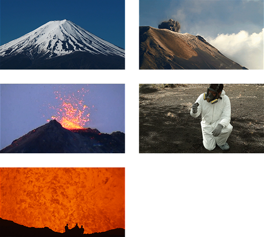

Introducción del tema: Utilice el vídeo o su propio material
Científicos de todo el mundo estudian la actividad de diferentes volcanes. En algunos casos, lo hacen para asegurarse de que las personas que viven alrededor de dichos volcanes están a salvo. En otros casos, lo hacen con el fin de preparar importantes expediciones científicas para estudiar la composición de la Tierra.
Los volcanes se definen según la fase en la que se encuentren: extintos, inactivos y activos. Los científicos le han atribuido un color a cada una de las fases y han definido las acciones que deben llevarse a cabo en cada fase:
-
Verde: el volcán no muestra ningún signo de actividad.
-
Amarillo: el volcán muestra algunos signos de actividad y debería observase.
-
Naranja: el volcán está activo con emisiones mínimas.
-
Rojo: el volcán está activo con grandes emisiones o va a entrar en erupción inminentemente.

Vocabulario
- Fases volcánicas
-
Los tres niveles diferentes de actividad con los que se puede describir el estado actual de un volcán (p. ej.: extinto, inactivo y activo).
- Erupción
-
En un volcán activo, el estado en el que un volcán expulsa materiales con temperatura elevada como lava, rocas, polvo, ceniza y gas